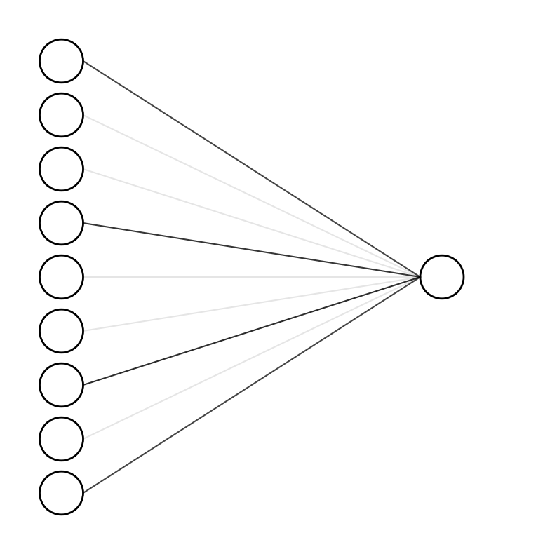

import numpy as np
import pandas as pd
from sklearn.impute import SimpleImputer
from sklearn.preprocessing import StandardScaler
from riskslim import RiskSLIMClassifier
from sklearn.svm import SVC
from sklearn.model_selection import StratifiedKFold
from sklearn.linear_model import LogisticRegression, SGDClassifier
from sklearn.metrics import roc_curve, auc
from sklearn.model_selection import GridSearchCV, RandomizedSearchCV
import matplotlib.pyplot as plt
Alzheimer’s EEG: Modeling#
The features from the previous notebook are now passed into a sparse risk model. The variables found to be important in classification were timescales (label as spectral “knee_freq” below) and 1/f slope. The model produced an AUC=0.8.
# Load features
df = pd.read_csv("alzheimers_features.csv")
# Load correlation features
corr = np.load("corr_params.npy")
corr_var_names = np.load("corr_params_names.npy")
df_corr = pd.DataFrame(corr, columns=corr_var_names)
# Merge dfs
df = pd.concat([df, df_corr], axis=1)
# X and y
X = df.iloc[:, 1:].to_numpy()
y = np.zeros(len(X), dtype=int)
y[df["label"] == 'A'] = 1 # alzheimer's
y[df["label"] == 'C'] = 0 # controls
# Scaler
# from sklearn.preprocessing import StandardScaler
# scaler = StandardScaler()
# X = scaler.fit_transform(X)
# # Impute missing values
# imp = SimpleImputer(missing_values=np.nan, strategy='mean')
# X = imp.fit_transform(X)
# Add intercept
variable_names = list(df.columns[1:])
# # Drop offset, constant, and exponent parameters
# # for faster computation
# keep = []
for i, v in enumerate(variable_names):
if ("offset" not in v) and ("const" not in v):# and ("exp" not in v):
keep.append(i)
# X = X[:, keep]
# variable_names = np.array(variable_names)[keep].tolist()
# variable_names.insert(0, "(Intercept)")
# np.random.seed(2)
# inds = np.random.choice(np.arange(88), size=60, replace=False)
#X = X[inds]
#y = y[inds]
from sklearn.ensemble import IsolationForest
X_clean = []
y_clean = []
inds_clean = []
for label in [0, 1]:
inds = np.where(y==label)[0]
X0 = X[y==label]
y0 = y[y==label]
imp = SimpleImputer(missing_values=np.nan, strategy='mean')
X0 = imp.fit_transform(X0)
scaler = StandardScaler()
X_init = scaler.fit_transform(X0)
isofor = IsolationForest(n_estimators=500, max_features=10, random_state=True)
isofor.fit(X0)
inliers = isofor.predict(X0) == 1
#X_clean.append(X0[inliers])
#y_clean.append(y0[inliers])
inds_clean.append(inds[inliers])
# X = np.concatenate(X_clean)
# y = np.concatenate(y_clean)
# X = X[np.concatenate(inds_clean)]
# y = y[np.concatenate(inds_clean)]
from sklearn.svm import SVC
from sklearn.model_selection import StratifiedKFold
from sklearn.linear_model import LogisticRegression, SGDClassifier
from sklearn.metrics import roc_curve, auc
from sklearn.model_selection import GridSearchCV, RandomizedSearchCV
import matplotlib.pyplot as plt
kfolds = StratifiedKFold(n_splits=5, shuffle=True, random_state=0)
_auc = []
_tpr = []
_fpr = []
for inds_train, inds_test in kfolds.split(X, y):
# Split
X_train, y_train = X[inds_train], y[inds_train]
X_test, y_test = X[inds_test], y[inds_test]
# Impute
imp_train = SimpleImputer(missing_values=np.nan, strategy='mean')
X_train = imp_train.fit_transform(X_train)
imp_test = SimpleImputer(missing_values=np.nan, strategy='mean')
X_test = imp_test.fit_transform(X_test)
# Scale
scaler_train = StandardScaler()
X_train = scaler_train.fit_transform(X_train)
scaler_test = StandardScaler()
X_test = scaler_test.fit_transform(X_test)
# Outlier removal
# isofor = IsolationForest(n_estimators=500)
# isofor.fit(X_train)
# inliers = isofor.predict(X_train) == 1
# X_train = X_train[inliers]
# y_train = y_train[inliers]
# isofor = IsolationForest(n_estimators=500)
# isofor.fit(X_test)
# inliers = isofor.predict(X_test) == 1
# X_test = X_test[inliers]
# y_test = y_test[inliers]
# Model
#lr = SGDClassifier(loss="log_loss", penalty="elasticnet")
lr = LogisticRegression(penalty="l1", solver="liblinear")
#lr = LogisticRegression()
#lr = SVC(probability=True)
# Grid search
# params = {'alpha': np.linspace(1e-2, 1e1, 1000), "l1_ratio": np.linspace(.01, .99, 1000)}
# lr = RandomizedSearchCV(lr, params, n_iter=200, random_state=0)
# Train
lr.fit(X_train, y_train)
# Test
fpr, tpr, thresholds = roc_curve(y_test, lr.predict_proba(X_test)[:, 1], pos_label=1)
print(auc(fpr, tpr).round(2))
plt.plot(fpr, tpr, "-o", color='C0', ms=4, alpha=.5)
_auc.append(auc(fpr, tpr))
_tpr.append(tpr)
_fpr.append(fpr)
plt.plot([0, 1], [0, 1], color='k', ls='--')
print()
print(np.mean(_auc).round(2))
plt.plot(_fpr[np.argmax(_auc)], _tpr[np.argmax(_auc)], "-o", color='C1');
0.52
0.39
0.44
0.34
0.33
0.41
lr.predict(X_train) == y_train
array([ True, True, True, True, True, True, True, True, True,
True, True, True, True, True, True, True, True, True,
True, True, True, True, True, True, True, True, True,
True, True, True, True, True, True, True, True, True,
True, True, True, True, True, True, True, True, True,
True, True, True, True, True, True, True, True, True,
True, True, True, True, True, True, True, True, True,
True, True, True, True, True, True, True, True])
from sklearn.svm import SVC
from sklearn.model_selection import StratifiedKFold
from sklearn.linear_model import LogisticRegression, SGDClassifier
from sklearn.metrics import roc_curve, auc
from sklearn.model_selection import GridSearchCV, RandomizedSearchCV
import matplotlib.pyplot as plt
kfolds = StratifiedKFold(n_splits=5, shuffle=True, random_state=0)
_auc = []
_tpr = []
_fpr = []
for inds_train, inds_test in kfolds.split(X, y):
# Split
X_train, y_train = X[inds_train], y[inds_train]
X_test, y_test = X[inds_test], y[inds_test]
# Impute
imp_train = SimpleImputer(missing_values=np.nan, strategy='mean')
X_train = imp_train.fit_transform(X_train)
imp_test = SimpleImputer(missing_values=np.nan, strategy='mean')
X_test = imp_test.fit_transform(X_test)
# Scale
scaler_train = StandardScaler()
X_train = scaler_train.fit_transform(X_train)
scaler_test = StandardScaler()
X_test = scaler_test.fit_transform(X_test)
# Outlier removal
contam = .2
isofor = IsolationForest(n_estimators=500, contamination=contam)
isofor.fit(X_train)
inliers = isofor.predict(X_train) == 1
X_train = X_train[inliers]
y_train = y_train[inliers]
isofor = IsolationForest(n_estimators=500, contamination=contam)
isofor.fit(X_test)
inliers = isofor.predict(X_test) == 1
X_test = X_test[inliers]
y_test = y_test[inliers]
# Model
#lr = SGDClassifier(loss="log_loss", penalty="elasticnet")
#lr = LogisticRegression(penalty="l1", solver="liblinear")
lr = SVC(probability=True)
# Grid search
#params = {'alpha': np.linspace(1e-2, 1e1, 1000), "l1_ratio": np.linspace(.01, .99, 1000)}
#lr = RandomizedSearchCV(lr, params, n_iter=200, random_state=0)
# Train
lr.fit(X_train, y_train)
# Test
fpr, tpr, thresholds = roc_curve(y_test, lr.predict_proba(X_test)[:, 1], pos_label=1)
print(auc(fpr, tpr).round(2))
plt.plot(fpr, tpr, "-o", color='C0', ms=4, alpha=.5)
_auc.append(auc(fpr, tpr))
_tpr.append(tpr)
_fpr.append(fpr)
plt.plot([0, 1], [0, 1], color='k', ls='--')
print()
print(np.mean(_auc).round(2))
plt.plot(_fpr[np.argmax(_auc)], _tpr[np.argmax(_auc)], "-o", color='C1');
0.58
0.44
0.88
0.98
0.67
0.71
# Load features
df = pd.read_csv("alzheimers_features.csv")
# Load correlation features
corr = np.load("corr_params.npy")
corr_var_names = np.load("corr_params_names.npy")
df_corr = pd.DataFrame(corr, columns=corr_var_names)
# Merge dfs
df = pd.concat([df, df_corr], axis=1)
# X and y
X = df.iloc[:, 1:].to_numpy()
y = np.zeros(len(X), dtype=int)
y[df["label"] == 'A'] = 1 # alzheimer's
y[df["label"] == 'C'] = 0 # controls
# Scaler
# from sklearn.preprocessing import StandardScaler
# scaler = StandardScaler()
# X = scaler.fit_transform(X)
# # Impute missing values
# imp = SimpleImputer(missing_values=np.nan, strategy='mean')
# X = imp.fit_transform(X)
# Add intercept
variable_names = list(df.columns[1:])
# Drop offset, constant, and exponent parameters
# for faster computation
keep = []
for i, v in enumerate(variable_names):
if ("offset" not in v) and ("const" not in v) and ("exp" not in v):
keep.append(i)
X = X[:, keep]
variable_names = np.array(variable_names)[keep].tolist()
variable_names.insert(0, "(Intercept)")
# RiskSLIM settings
settings = {
"max_runtime": 60.0,
"max_tolerance": np.finfo("float").eps,
"loss_computation": "fast",
"round_flag": True,
"polish_flag": True,
"chained_updates_flag": True,
"add_cuts_at_heuristic_solutions": True,
"initialization_flag": True,
"init_max_runtime": 60.0,
"init_max_coefficient_gap": 0.9,
"cplex_randomseed": 0,
"cplex_mipemphasis": 0,
}
kfolds = StratifiedKFold(n_splits=5, shuffle=True, random_state=0)
_auc = []
_tpr = []
_fpr = []
for inds_train, inds_test in kfolds.split(X, y):
# Split
X_train, y_train = X[inds_train], y[inds_train]
X_test, y_test = X[inds_test], y[inds_test]
# Impute
imp_train = SimpleImputer(missing_values=np.nan, strategy='mean')
X_train = imp_train.fit_transform(X_train)
imp_test = SimpleImputer(missing_values=np.nan, strategy='mean')
X_test = imp_test.fit_transform(X_test)
# Scaler
scaler_train = StandardScaler()
X_train = scaler_train.fit_transform(X_train)
scaler_test = StandardScaler()
X_test = scaler_test.fit_transform(X_test)
X_train = np.insert(X_train, 0, np.ones(len(X_train)), axis=1)
X_test = np.insert(X_test, 0, np.ones(len(X_test)), axis=1)
# Model
rs = RiskSLIMClassifier(
max_size=10,
max_coef=20,
max_abs_offset=20,
variable_names=variable_names,
outcome_name="alzheimers",
verbose=False,
settings=settings
)
# Train
rs.fit(X_train, y_train)
# Test
fpr, tpr, thresholds = roc_curve(y_test, rs.predict_proba(X_test), pos_label=1)
print(auc(tpr, fpr).round(2))
print(np.array(variable_names)[rs.rho != 0])
print()
plt.plot(tpr, fpr, "-o", color='C0', ms=4, alpha=.5)
_auc.append(auc(tpr, fpr))
_tpr.append(tpr)
_fpr.append(fpr)
plt.plot([0, 1], [0, 1], color='k', ls='--')
print()
print(np.mean(_auc).round(2))
plt.plot(_tpr[np.argmax(_auc)], _fpr[np.argmax(_auc)], "-o", color='C1');
variable_names
['(Intercept)',
'linear_slope_Fp1',
'alpha_knee_freq_Fp1',
'alpha_exp_Fp1',
'gamma_knee_freq_Fp1',
'gamma_exp_Fp1',
'linear_slope_Fp2',
'alpha_knee_freq_Fp2',
'alpha_exp_Fp2',
'gamma_knee_freq_Fp2',
'gamma_exp_Fp2',
'linear_slope_F3',
'alpha_knee_freq_F3',
'alpha_exp_F3',
'gamma_knee_freq_F3',
'gamma_exp_F3',
'linear_slope_F4',
'alpha_knee_freq_F4',
'alpha_exp_F4',
'gamma_knee_freq_F4',
'gamma_exp_F4',
'linear_slope_C3',
'alpha_knee_freq_C3',
'alpha_exp_C3',
'gamma_knee_freq_C3',
'gamma_exp_C3',
'linear_slope_C4',
'alpha_knee_freq_C4',
'alpha_exp_C4',
'gamma_knee_freq_C4',
'gamma_exp_C4',
'linear_slope_P3',
'alpha_knee_freq_P3',
'alpha_exp_P3',
'gamma_knee_freq_P3',
'gamma_exp_P3',
'linear_slope_P4',
'alpha_knee_freq_P4',
'alpha_exp_P4',
'gamma_knee_freq_P4',
'gamma_exp_P4',
'linear_slope_O1',
'alpha_knee_freq_O1',
'alpha_exp_O1',
'gamma_knee_freq_O1',
'gamma_exp_O1',
'linear_slope_O2',
'alpha_knee_freq_O2',
'alpha_exp_O2',
'gamma_knee_freq_O2',
'gamma_exp_O2',
'linear_slope_F7',
'alpha_knee_freq_F7',
'alpha_exp_F7',
'gamma_knee_freq_F7',
'gamma_exp_F7',
'linear_slope_F8',
'alpha_knee_freq_F8',
'alpha_exp_F8',
'gamma_knee_freq_F8',
'gamma_exp_F8',
'linear_slope_T3',
'alpha_knee_freq_T3',
'alpha_exp_T3',
'gamma_knee_freq_T3',
'gamma_exp_T3',
'linear_slope_T4',
'alpha_knee_freq_T4',
'alpha_exp_T4',
'gamma_knee_freq_T4',
'gamma_exp_T4',
'linear_slope_T5',
'alpha_knee_freq_T5',
'alpha_exp_T5',
'gamma_knee_freq_T5',
'gamma_exp_T5',
'linear_slope_T6',
'alpha_knee_freq_T6',
'alpha_exp_T6',
'gamma_knee_freq_T6',
'gamma_exp_T6',
'linear_slope_Fz',
'alpha_knee_freq_Fz',
'alpha_exp_Fz',
'gamma_knee_freq_Fz',
'gamma_exp_Fz',
'linear_slope_Cz',
'alpha_knee_freq_Cz',
'alpha_exp_Cz',
'gamma_knee_freq_Cz',
'gamma_exp_Cz',
'linear_slope_Pz',
'alpha_knee_freq_Pz',
'alpha_exp_Pz',
'gamma_knee_freq_Pz',
'gamma_exp_Pz',
'corr_Fp2_and_Fp1_knee_freq',
'corr_Fp2_and_Fp1_exp',
'corr_F3_and_Fp1_knee_freq',
'corr_F3_and_Fp1_exp',
'corr_F3_and_Fp2_knee_freq',
'corr_F3_and_Fp2_exp',
'corr_F4_and_Fp1_knee_freq',
'corr_F4_and_Fp1_exp',
'corr_F4_and_Fp2_knee_freq',
'corr_F4_and_Fp2_exp',
'corr_F4_and_F3_knee_freq',
'corr_F4_and_F3_exp',
'corr_C3_and_Fp1_knee_freq',
'corr_C3_and_Fp1_exp',
'corr_C3_and_Fp2_knee_freq',
'corr_C3_and_Fp2_exp',
'corr_C3_and_F3_knee_freq',
'corr_C3_and_F3_exp',
'corr_C3_and_F4_knee_freq',
'corr_C3_and_F4_exp',
'corr_C4_and_Fp1_knee_freq',
'corr_C4_and_Fp1_exp',
'corr_C4_and_Fp2_knee_freq',
'corr_C4_and_Fp2_exp',
'corr_C4_and_F3_knee_freq',
'corr_C4_and_F3_exp',
'corr_C4_and_F4_knee_freq',
'corr_C4_and_F4_exp',
'corr_C4_and_C3_knee_freq',
'corr_C4_and_C3_exp',
'corr_P3_and_Fp1_knee_freq',
'corr_P3_and_Fp1_exp',
'corr_P3_and_Fp2_knee_freq',
'corr_P3_and_Fp2_exp',
'corr_P3_and_F3_knee_freq',
'corr_P3_and_F3_exp',
'corr_P3_and_F4_knee_freq',
'corr_P3_and_F4_exp',
'corr_P3_and_C3_knee_freq',
'corr_P3_and_C3_exp',
'corr_P3_and_C4_knee_freq',
'corr_P3_and_C4_exp',
'corr_P4_and_Fp1_knee_freq',
'corr_P4_and_Fp1_exp',
'corr_P4_and_Fp2_knee_freq',
'corr_P4_and_Fp2_exp',
'corr_P4_and_F3_knee_freq',
'corr_P4_and_F3_exp',
'corr_P4_and_F4_knee_freq',
'corr_P4_and_F4_exp',
'corr_P4_and_C3_knee_freq',
'corr_P4_and_C3_exp',
'corr_P4_and_C4_knee_freq',
'corr_P4_and_C4_exp',
'corr_P4_and_P3_knee_freq',
'corr_P4_and_P3_exp',
'corr_O1_and_Fp1_knee_freq',
'corr_O1_and_Fp1_exp',
'corr_O1_and_Fp2_knee_freq',
'corr_O1_and_Fp2_exp',
'corr_O1_and_F3_knee_freq',
'corr_O1_and_F3_exp',
'corr_O1_and_F4_knee_freq',
'corr_O1_and_F4_exp',
'corr_O1_and_C3_knee_freq',
'corr_O1_and_C3_exp',
'corr_O1_and_C4_knee_freq',
'corr_O1_and_C4_exp',
'corr_O1_and_P3_knee_freq',
'corr_O1_and_P3_exp',
'corr_O1_and_P4_knee_freq',
'corr_O1_and_P4_exp',
'corr_O2_and_Fp1_knee_freq',
'corr_O2_and_Fp1_exp',
'corr_O2_and_Fp2_knee_freq',
'corr_O2_and_Fp2_exp',
'corr_O2_and_F3_knee_freq',
'corr_O2_and_F3_exp',
'corr_O2_and_F4_knee_freq',
'corr_O2_and_F4_exp',
'corr_O2_and_C3_knee_freq',
'corr_O2_and_C3_exp',
'corr_O2_and_C4_knee_freq',
'corr_O2_and_C4_exp',
'corr_O2_and_P3_knee_freq',
'corr_O2_and_P3_exp',
'corr_O2_and_P4_knee_freq',
'corr_O2_and_P4_exp',
'corr_O2_and_O1_knee_freq',
'corr_O2_and_O1_exp',
'corr_F7_and_Fp1_knee_freq',
'corr_F7_and_Fp1_exp',
'corr_F7_and_Fp2_knee_freq',
'corr_F7_and_Fp2_exp',
'corr_F7_and_F3_knee_freq',
'corr_F7_and_F3_exp',
'corr_F7_and_F4_knee_freq',
'corr_F7_and_F4_exp',
'corr_F7_and_C3_knee_freq',
'corr_F7_and_C3_exp',
'corr_F7_and_C4_knee_freq',
'corr_F7_and_C4_exp',
'corr_F7_and_P3_knee_freq',
'corr_F7_and_P3_exp',
'corr_F7_and_P4_knee_freq',
'corr_F7_and_P4_exp',
'corr_F7_and_O1_knee_freq',
'corr_F7_and_O1_exp',
'corr_F7_and_O2_knee_freq',
'corr_F7_and_O2_exp',
'corr_F8_and_Fp1_knee_freq',
'corr_F8_and_Fp1_exp',
'corr_F8_and_Fp2_knee_freq',
'corr_F8_and_Fp2_exp',
'corr_F8_and_F3_knee_freq',
'corr_F8_and_F3_exp',
'corr_F8_and_F4_knee_freq',
'corr_F8_and_F4_exp',
'corr_F8_and_C3_knee_freq',
'corr_F8_and_C3_exp',
'corr_F8_and_C4_knee_freq',
'corr_F8_and_C4_exp',
'corr_F8_and_P3_knee_freq',
'corr_F8_and_P3_exp',
'corr_F8_and_P4_knee_freq',
'corr_F8_and_P4_exp',
'corr_F8_and_O1_knee_freq',
'corr_F8_and_O1_exp',
'corr_F8_and_O2_knee_freq',
'corr_F8_and_O2_exp',
'corr_F8_and_F7_knee_freq',
'corr_F8_and_F7_exp',
'corr_T3_and_Fp1_knee_freq',
'corr_T3_and_Fp1_exp',
'corr_T3_and_Fp2_knee_freq',
'corr_T3_and_Fp2_exp',
'corr_T3_and_F3_knee_freq',
'corr_T3_and_F3_exp',
'corr_T3_and_F4_knee_freq',
'corr_T3_and_F4_exp',
'corr_T3_and_C3_knee_freq',
'corr_T3_and_C3_exp',
'corr_T3_and_C4_knee_freq',
'corr_T3_and_C4_exp',
'corr_T3_and_P3_knee_freq',
'corr_T3_and_P3_exp',
'corr_T3_and_P4_knee_freq',
'corr_T3_and_P4_exp',
'corr_T3_and_O1_knee_freq',
'corr_T3_and_O1_exp',
'corr_T3_and_O2_knee_freq',
'corr_T3_and_O2_exp',
'corr_T3_and_F7_knee_freq',
'corr_T3_and_F7_exp',
'corr_T3_and_F8_knee_freq',
'corr_T3_and_F8_exp',
'corr_T4_and_Fp1_knee_freq',
'corr_T4_and_Fp1_exp',
'corr_T4_and_Fp2_knee_freq',
'corr_T4_and_Fp2_exp',
'corr_T4_and_F3_knee_freq',
'corr_T4_and_F3_exp',
'corr_T4_and_F4_knee_freq',
'corr_T4_and_F4_exp',
'corr_T4_and_C3_knee_freq',
'corr_T4_and_C3_exp',
'corr_T4_and_C4_knee_freq',
'corr_T4_and_C4_exp',
'corr_T4_and_P3_knee_freq',
'corr_T4_and_P3_exp',
'corr_T4_and_P4_knee_freq',
'corr_T4_and_P4_exp',
'corr_T4_and_O1_knee_freq',
'corr_T4_and_O1_exp',
'corr_T4_and_O2_knee_freq',
'corr_T4_and_O2_exp',
'corr_T4_and_F7_knee_freq',
'corr_T4_and_F7_exp',
'corr_T4_and_F8_knee_freq',
'corr_T4_and_F8_exp',
'corr_T4_and_T3_knee_freq',
'corr_T4_and_T3_exp',
'corr_T5_and_Fp1_knee_freq',
'corr_T5_and_Fp1_exp',
'corr_T5_and_Fp2_knee_freq',
'corr_T5_and_Fp2_exp',
'corr_T5_and_F3_knee_freq',
'corr_T5_and_F3_exp',
'corr_T5_and_F4_knee_freq',
'corr_T5_and_F4_exp',
'corr_T5_and_C3_knee_freq',
'corr_T5_and_C3_exp',
'corr_T5_and_C4_knee_freq',
'corr_T5_and_C4_exp',
'corr_T5_and_P3_knee_freq',
'corr_T5_and_P3_exp',
'corr_T5_and_P4_knee_freq',
'corr_T5_and_P4_exp',
'corr_T5_and_O1_knee_freq',
'corr_T5_and_O1_exp',
'corr_T5_and_O2_knee_freq',
'corr_T5_and_O2_exp',
'corr_T5_and_F7_knee_freq',
'corr_T5_and_F7_exp',
'corr_T5_and_F8_knee_freq',
'corr_T5_and_F8_exp',
'corr_T5_and_T3_knee_freq',
'corr_T5_and_T3_exp',
'corr_T5_and_T4_knee_freq',
'corr_T5_and_T4_exp',
'corr_T6_and_Fp1_knee_freq',
'corr_T6_and_Fp1_exp',
'corr_T6_and_Fp2_knee_freq',
'corr_T6_and_Fp2_exp',
'corr_T6_and_F3_knee_freq',
'corr_T6_and_F3_exp',
'corr_T6_and_F4_knee_freq',
'corr_T6_and_F4_exp',
'corr_T6_and_C3_knee_freq',
'corr_T6_and_C3_exp',
'corr_T6_and_C4_knee_freq',
'corr_T6_and_C4_exp',
'corr_T6_and_P3_knee_freq',
'corr_T6_and_P3_exp',
'corr_T6_and_P4_knee_freq',
'corr_T6_and_P4_exp',
'corr_T6_and_O1_knee_freq',
'corr_T6_and_O1_exp',
'corr_T6_and_O2_knee_freq',
'corr_T6_and_O2_exp',
'corr_T6_and_F7_knee_freq',
'corr_T6_and_F7_exp',
'corr_T6_and_F8_knee_freq',
'corr_T6_and_F8_exp',
'corr_T6_and_T3_knee_freq',
'corr_T6_and_T3_exp',
'corr_T6_and_T4_knee_freq',
'corr_T6_and_T4_exp',
'corr_T6_and_T5_knee_freq',
'corr_T6_and_T5_exp',
'corr_Fz_and_Fp1_knee_freq',
'corr_Fz_and_Fp1_exp',
'corr_Fz_and_Fp2_knee_freq',
'corr_Fz_and_Fp2_exp',
'corr_Fz_and_F3_knee_freq',
'corr_Fz_and_F3_exp',
'corr_Fz_and_F4_knee_freq',
'corr_Fz_and_F4_exp',
'corr_Fz_and_C3_knee_freq',
'corr_Fz_and_C3_exp',
'corr_Fz_and_C4_knee_freq',
'corr_Fz_and_C4_exp',
'corr_Fz_and_P3_knee_freq',
'corr_Fz_and_P3_exp',
'corr_Fz_and_P4_knee_freq',
'corr_Fz_and_P4_exp',
'corr_Fz_and_O1_knee_freq',
'corr_Fz_and_O1_exp',
'corr_Fz_and_O2_knee_freq',
'corr_Fz_and_O2_exp',
'corr_Fz_and_F7_knee_freq',
'corr_Fz_and_F7_exp',
'corr_Fz_and_F8_knee_freq',
'corr_Fz_and_F8_exp',
'corr_Fz_and_T3_knee_freq',
'corr_Fz_and_T3_exp',
'corr_Fz_and_T4_knee_freq',
'corr_Fz_and_T4_exp',
'corr_Fz_and_T5_knee_freq',
'corr_Fz_and_T5_exp',
'corr_Fz_and_T6_knee_freq',
'corr_Fz_and_T6_exp',
'corr_Cz_and_Fp1_knee_freq',
'corr_Cz_and_Fp1_exp',
'corr_Cz_and_Fp2_knee_freq',
'corr_Cz_and_Fp2_exp',
'corr_Cz_and_F3_knee_freq',
'corr_Cz_and_F3_exp',
'corr_Cz_and_F4_knee_freq',
'corr_Cz_and_F4_exp',
'corr_Cz_and_C3_knee_freq',
'corr_Cz_and_C3_exp',
'corr_Cz_and_C4_knee_freq',
'corr_Cz_and_C4_exp',
'corr_Cz_and_P3_knee_freq',
'corr_Cz_and_P3_exp',
'corr_Cz_and_P4_knee_freq',
'corr_Cz_and_P4_exp',
'corr_Cz_and_O1_knee_freq',
'corr_Cz_and_O1_exp',
'corr_Cz_and_O2_knee_freq',
'corr_Cz_and_O2_exp',
'corr_Cz_and_F7_knee_freq',
'corr_Cz_and_F7_exp',
'corr_Cz_and_F8_knee_freq',
'corr_Cz_and_F8_exp',
'corr_Cz_and_T3_knee_freq',
'corr_Cz_and_T3_exp',
'corr_Cz_and_T4_knee_freq',
'corr_Cz_and_T4_exp',
'corr_Cz_and_T5_knee_freq',
'corr_Cz_and_T5_exp',
'corr_Cz_and_T6_knee_freq',
'corr_Cz_and_T6_exp',
'corr_Cz_and_Fz_knee_freq',
'corr_Cz_and_Fz_exp',
'corr_Pz_and_Fp1_knee_freq',
'corr_Pz_and_Fp1_exp',
'corr_Pz_and_Fp2_knee_freq',
'corr_Pz_and_Fp2_exp',
'corr_Pz_and_F3_knee_freq',
'corr_Pz_and_F3_exp',
'corr_Pz_and_F4_knee_freq',
'corr_Pz_and_F4_exp',
'corr_Pz_and_C3_knee_freq',
'corr_Pz_and_C3_exp',
'corr_Pz_and_C4_knee_freq',
'corr_Pz_and_C4_exp',
'corr_Pz_and_P3_knee_freq',
'corr_Pz_and_P3_exp',
'corr_Pz_and_P4_knee_freq',
'corr_Pz_and_P4_exp',
'corr_Pz_and_O1_knee_freq',
'corr_Pz_and_O1_exp',
'corr_Pz_and_O2_knee_freq',
'corr_Pz_and_O2_exp',
'corr_Pz_and_F7_knee_freq',
'corr_Pz_and_F7_exp',
'corr_Pz_and_F8_knee_freq',
'corr_Pz_and_F8_exp',
'corr_Pz_and_T3_knee_freq',
'corr_Pz_and_T3_exp',
'corr_Pz_and_T4_knee_freq',
'corr_Pz_and_T4_exp',
'corr_Pz_and_T5_knee_freq',
'corr_Pz_and_T5_exp',
'corr_Pz_and_T6_knee_freq',
'corr_Pz_and_T6_exp',
'corr_Pz_and_Fz_knee_freq',
'corr_Pz_and_Fz_exp',
'corr_Pz_and_Cz_knee_freq',
'corr_Pz_and_Cz_exp']
The ‘loss’ parameter of SGDClassifier must be a str among {‘huber’, ‘squared_hinge’, ‘log’ (deprecated), ‘modified_huber’, ‘epsilon_insensitive’, ‘squared_epsilon_insensitive’, ‘perceptron’, ‘hinge’, ‘squared_error’, ‘log_loss’}. Got ‘’ instead.
plt.plot(tpr, fpr)
[<matplotlib.lines.Line2D at 0x17fd9f850>]
RiskSLIM#
RiskSLIM is a sparse linear integer model with risk scores. This model provides improved interpretablity compared to standard logistic regression.
# RiskSLIM settings
settings = {
"max_runtime": 30.0,
"max_tolerance": np.finfo("float").eps,
"loss_computation": "fast",
"round_flag": True,
"polish_flag": True,
"chained_updates_flag": True,
"add_cuts_at_heuristic_solutions": True,
"initialization_flag": True,
"init_max_runtime": 120.0,
"init_max_coefficient_gap": 0.9,
"cplex_randomseed": 0,
"cplex_mipemphasis": 0,
}
# Initialize model
rs = RiskSLIMClassifier(
max_size=5,
max_coef=6,
max_abs_offset=10,
variable_names=variable_names,
outcome_name="alzheimers",
verbose=False,
settings=settings
)
# Fit
rs.fit(X, y)
rs
+------------------------------------------------------+-------------------+-----------+ | Pr(ALZHEIMERS = +1) = 1.0/(1.0 + exp(-(1 + score)) | | | | ==================================================== | ================= | ========= | | linear_slope_O1 | 5 points | + ..... | | alpha_knee_freq_C3 | 4 points | + ..... | | gamma_knee_freq_F4 | -1 points | + ..... | | alpha_knee_freq_Cz | -2 points | + ..... | | linear_slope_Pz | -5 points | + ..... | | ==================================================== | ================= | ========= | | ADD POINTS FROM ROWS 1 to 5 | SCORE | = ..... | +------------------------------------------------------+-------------------+-----------+In a Jupyter environment, please rerun this cell to show the HTML representation or trust the notebook.
On GitHub, the HTML representation is unable to render, please try loading this page with nbviewer.org.
+------------------------------------------------------+-------------------+-----------+ | Pr(ALZHEIMERS = +1) = 1.0/(1.0 + exp(-(1 + score)) | | | | ==================================================== | ================= | ========= | | linear_slope_O1 | 5 points | + ..... | | alpha_knee_freq_C3 | 4 points | + ..... | | gamma_knee_freq_F4 | -1 points | + ..... | | alpha_knee_freq_Cz | -2 points | + ..... | | linear_slope_Pz | -5 points | + ..... | | ==================================================== | ================= | ========= | | ADD POINTS FROM ROWS 1 to 5 | SCORE | = ..... | +------------------------------------------------------+-------------------+-----------+
rs.create_report("report.html")
PosixPath('report.html')
from IPython.display import IFrame
IFrame(src="report.html", width=1200, height=1000)
import matplotlib.pyplot as plt
import numpy as np
np.random.seed(2)
fig, ax = plt.subplots(figsize=(10, 10))
for i in [.1, .2, .3, .4, .5, .6, .7, .8, .9]:
circle = plt.Circle(
(.1, i),
.04, # Size
color='k',
lw=2,
fill=False
)
ax.add_artist(circle)
alpha=np.random.choice(np.linspace(0, .9))
if alpha < 0.5:
alpha = .1
ax.plot([.14, .76], [i, .5], color='k', alpha=alpha)
circle = plt.Circle(
(.8, .5),
.04, # Size
color='k',
lw=2,
fill=False
)
ax.add_artist(circle)
ax.set_xlim(0, 1)
ax.set_ylim(0, 1)
ax.axis('off')
plt.savefig('sparse.png', dpi=300)

pwd
'/Users/ryanhammonds/projects/alzheimers_eeg/docs/notebook'